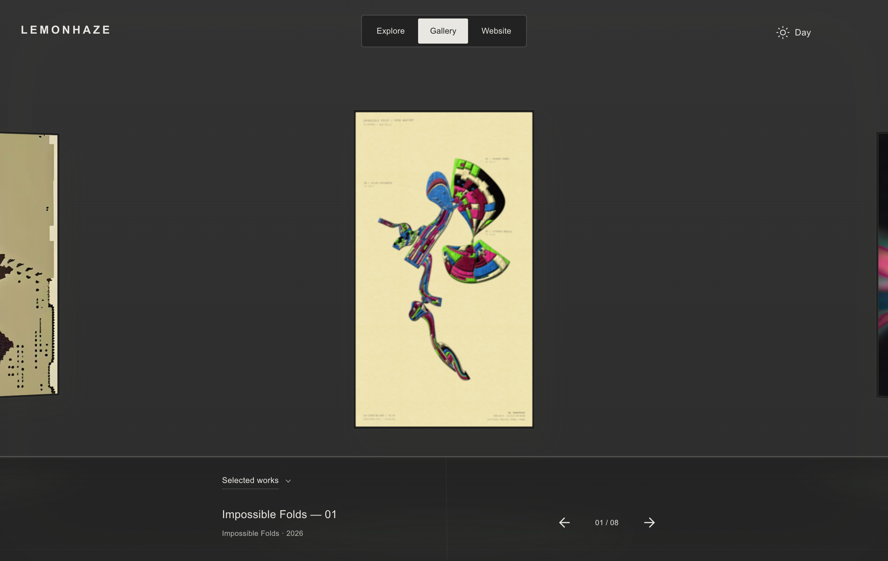
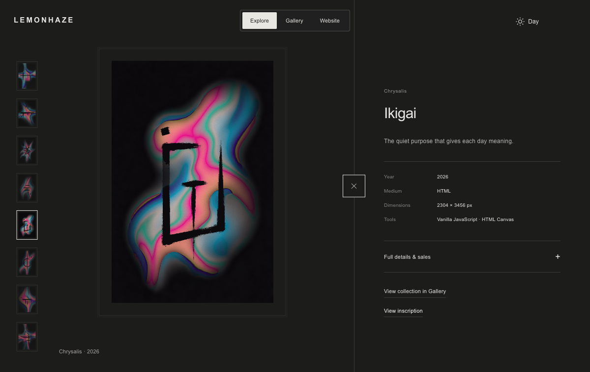
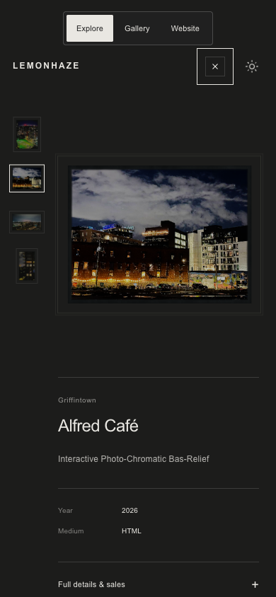

Local review · November 12, 2026. A decoded high-resolution layer gradually sharpens over the opaque preview, then releases that temporary layer. The frame stays still. Pixel art is not blurred; reduced motion skips the animation.

Before the fix, Alfred Café repeatedly alternated between 444, 493 and 547 pixels wide. Afterwards its width remained 493 pixels across sampled frames. All four Griffintown works were checked over time, including portrait and panoramic pieces. A regression test repeats the viewport-measuring renderer and checks resizing, centring and stable canvas allocations.

